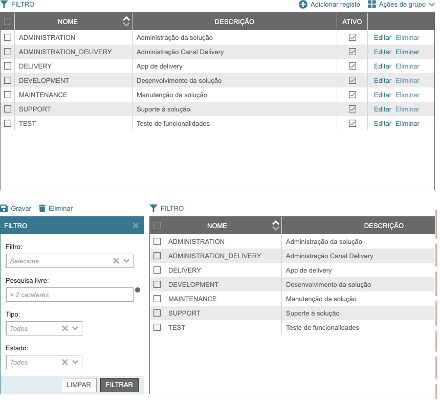

Table¶
Este componente mostra uma lista de registos, possibilita filtro, ordena e executa procedimentos sobre o seu conteúdo.
Requisitos¶
/framework/components/table.js |
|
/framework/components/dropbutton.js |
Drop Button |
/framework/components/checkbox.js |
Check Box |
/framework/components/shield.js |
Shield |
/framework/components/shared.js |
JS Shared |
Note
As páginas geradas por PHP PageHelper fazem, por defeito, o carregamento dos componentes necessários.
Attention
Html do componente (tag)¶
<fwk-table>
<div slot="config"></div>
<div slot="columns"></div>
<fwk-component slot="table-top-action"><fwk-component>
...
<fwk-component slot="table-bulk-action"><fwk-component>
...
<fwk-component slot="filter-top-action"><fwk-component>
...
<div slot="filter-component"></div>
...
<fwk-component slot="filter-action"><fwk-component>
...
</fwk-table>
| Atributo | Descrição | Obrigatório | Opções | Default |
|---|---|---|---|---|
id |
Identificador único do componente | Sim (?) | ||
disable |
Inibe componente | Não | “true”, “false” | “false” |
hide |
Esconde componente | Não | “true”, “false” | “false” |
color |
Cor base do componente | Não | “blue”, “gray” | “gray” |
Important
O atributo id só é obrigatório no caso de ser necessária a identificação do componente para interacção com qualquer uma das suas funcionalidades.
| Slot | Descrição | Obrigatório | Observações |
|---|---|---|---|
config |
Configuração geral da tabela | sim | Slot config |
columns |
Configuralçao das colunas | Sim | Slot columns |
table-top-action |
Acções de topo da tabela | Não | Slot table-top-action |
table-bulk-action |
Acções de grupo da tabela | Não | Slot table-bulk-action |
rows |
Linhas de dados | Não | Slot rows |
filter-top-action |
Acções de topo do filtro | Não | Slot filter-top-action |
filter-component |
Componentes do filtro | Sim | Slot filter-component |
filter-action |
Acções do filtro | Sim | Slot filter-action |
Attention
A ordem das slots no componente é, obrigatóriamente, a seguinte:
configcolumnstable-top-actiontable-bulk-actionrowsfilter-top-actionfilter-componentfilter-action
Slot config¶
A slot config é um objecto. Cada propriedade do objecto corresponde a um atributo da tabela.
{"filter":???, "actions":???, "bulk":???, "row_actions":???, "rows":???, "template_height":???, "page":???}
| Atributo | Descrição | Obrigatório | Opções | Default |
|---|---|---|---|---|
filter |
Com filtro | Não | true, false | false |
actions |
Com acções de topo | Não | true, false | false |
bulk |
Com acções de grupo | Não | true, false | false |
row_actions |
Com acções de linha | Não | true, false | false |
rows |
Mínimo de linhas visíveis | Não | 1, 2, … | — |
template_height |
Acompanha o footer da página
Define a altura ocupada pelo template
|
Não | 1, 2, … | 175 |
page |
Paginação (nº de linhas) | Não | 1, 2, … | calculadas |
Slot columns¶
A slot columns é um objecto. Cada propriedade do objecto corresponde a uma coluna da tabela.
{"alias.column": {"title": "???", "width":???, "order":???, "tooltip":???, align":"???"},
...,
"_actions": {"width":???, align":"???"}
}
| Atributo | Descrição | Obrigatório | Opções | Default |
|---|---|---|---|---|
alias.column |
Correspondência com DB | Sim | Não | |
title |
Título da coluna | Não | true, false | false |
width |
Largura da coluna | Não | true, false | false |
order |
Coluna com ordenação | Não | true, false | false |
tooltip |
Coluna com tooltip | Não | true, false | false |
align |
Alinhamento do conteúdo | Não | “left”, “center”, “right” | “left” |
_actions |
Coluna para acções de linha | Não |
Slot table-top-action¶
<fwk-component slot="table-top-action"></fwk-component>
Slot table-bulk-action¶
A slot table-bulk-action é um componente, habitualmente um Button.
| Existirá uma slot deste tipo para cada componente que se pretenda adicionar ao Drop Button de acções de grupo.
<fwk-component slot="table-bulk-action"></fwk-component>
Slot rows¶
A slot rows é um array de objectos usado apenas para carregamento html . Cada objecto corresponde a uma linha de dados e tem o seguinte formato:
{"permissions":["?,?"],
"key":"???",
"values":{"alias.column":???, ...},
"_data": {"attr1": true, "attr2": ["val1", "val2"], "attr3": {"at1": ?, "at2": "?"}},
"_actions": ["component",..."]
}
Tip
| Atributo | Descrição | Obrigatório | Opções | Default |
|---|---|---|---|---|
permissions |
Permissões para operações bulk | Não | definidas livremente | todas |
key |
Identificador único da linha | Sim | ||
values |
Valores para colunas | Sim | ||
alias.column |
Correspondência com DB | Sim | ||
_data |
Conjunto extra de atributos | Não | ||
_actions |
Acções para linha | Não |
Important
O componente disponibiliza uma funcionalidade para devolver o conjunto extra de atributos que sejam acrescentados a cada uma das linhas.
Slot filter-top-action¶
<fwk-component slot="filter-top-action"></fwk-component>
Slot filter-component¶
filter-component é um componente ou um agrupador de componentes.<fwk-component slot="filter-top-action"></fwk-component>
<div slot="filter-component">
<fwk-label></fwk-label>
<fwk-component></fwk-component>
</div>
Slot filter-action¶
filter-action é um componente, habitualmente um Form Button.<fwk-component slot="filter-action"></fwk-component>
Exemplos¶
Carregamento html¶
<fwk-table id="roles_list">
<div slot="config">{"filter":true, "actions":true, "bulk":true, "row_actions":true}</div>
<div slot="columns">{"sr.name": {"title":"NOME", "width":230, "order":true},
"sr.description": {"title":"DESCRIÇÃO", "width":400, "tooltip": true},
"sr.active": {"title":"ATIVO", "width":60, "align":"center"},
"_actions": {"width":130}}
</div>
<fwk-button slot="table-top-action" value="Adicionar registo" color="blue" function="addRecord">
<i slot="icon" class="fas fa-plus-circle fa-lg"></i>
</fwk-button>
<fwk-button slot="table-bulk-action" value="Eliminar Selecionados" color="blue" function="confirmDeleteBulk">
<i slot="icon" class="fas fa-trash"></i>
</fwk-button>
<div slot="rows">[{"key":"101", "values": {"sr.name":"TEST", "sr.description":"Teste de funcionalidades", "sr.active":true},
"_data":{"last_update": "2021-01-01"},
"_permissions":["u","d"],
"_data": {"sr.code","X2536"},
"_actions": ["<fwk-button value=\"Editar\" color=\"blue\" function='{\"editRecord\":[101]}'><\/fwk-button>",
"<fwk-button value=\"Eliminar\" color=\"blue\" function='{\"confirmDeleteRecord\":[101, \"TEST\"]}'><\/fwk-button>"]},
{"key":"3","values": {"sr.name":"SUPPORT", "sr.description":"Suporte à solução", "sr.active":true},
"_data":{"last_update": "2021-01-01"},
"_data": {"sr.code","X2537"},
"_permissions":["u"],
"_actions":["<fwk-button value=\"Editar\" color=\"blue\" function='{\"editRecord\":[3]}'><\/fwk-button>",
"<fwk-button value=\"Eliminar\" color=\"blue\" disable=\"true\" function='{\"confirmDeleteRecord\":[3, \"SUPPORT\"]}'><\/fwk-button>"]}]
...
</div>
<fwk-button id="filter_save" slot="filter-top-action" value="Gravar" color="blue" function="obj_filter_helper.confirmSave">
<i slot="icon" class="fas fa-save fa-lg"></i>
</fwk-button>
<fwk-button id="filter_delete" slot="filter-top-action" visible="false" value="Eliminar" color="blue" function="obj_filter_helper.confirmDelete">
<i slot="icon" class="fas fa-trash"></i>
</fwk-button>
<div slot="filter-component">
<fwk-label value="Filtro:"></fwk-label>
<fwk-select id="filter_id" key-value="id" key-text="name" placeholder="Selecione" width="250" function="obj_filter_helper.applySaved">
<div slot="options">[{},{},...]</div>
</fwk-select>
</div>
<div slot="filter-component" style="padding-right: 10px;">
<fwk-label value="Pesquisa livre:"></fwk-label>
<fwk-input id="filter_search" type="text" placeholder="> 2 carateres')" maxlength="50" width="250" tooltip-position="left">
<span slot="information">texto</span>
</fwk-input>
</div>
<div slot="filter-component">
<fwk-label value="Tipo:"></fwk-label>
<fwk-select id="role_system" key-value="value" key-text="description" placeholder="Todos" width="150">
<div slot="options">[{},{}]</div>
</fwk-select>
</div>
<div slot="filter-component">
<fwk-label value="Estado:"></fwk-label>
<fwk-select id="role_active" key-value="value" key-text="description" placeholder="Todos" width="150">
<div slot="options">[{},{}]</div>
</fwk-select>
</div>
<fwk-formbutton slot="filter-action" value="LIMPAR'" color="white" function="resetFilterComponents"></fwk-formbutton>
<fwk-formbutton slot="filter-action" value="FILTRAR" color="gray" function="applyFilter"></fwk-formbutton>
</fwk-table>
Tip
nodes tiver origem num array deverá ser convertida para json utilizando as opções JSON_HEX_QUOT | JSON_HEX_TAG.<?= json_encode($table_rows, JSON_HEX_QUOT | JSON_HEX_TAG) ?>.Carregamento Javascript¶
var obj_table = FormHelper.getComponent('roles_list');
var rows = [{"key":"101", "values": {"sr.name":"TEST", "sr.description":"Teste de funcionalidades", "sr.active":true},
"_data": {"last_update": "2021-01-01"},
"_permissions":["u","d"],
"_data": {"sr.code","X2536"},
"_actions": ["<fwk-button value=\"Editar\" color=\"blue\" function='{\"editRecord\":[101]}'><\/fwk-button>",
"<fwk-button value=\"Eliminar\" color=\"blue\" disable=\"false\" function='{\"confirmDeleteRecord\":[101, \"TEST\"]}'><\/fwk-button>"]},
{"key":"3","values": {"sr.name":"SUPPORT", "sr.description":"Suporte à solução", "sr.active":true},
"_data": {"last_update": "2021-01-01"},
"_permissions":["u"],
"_data": {"sr.code","X2537"},
"_actions":["<fwk-button value=\"Editar\" color=\"blue\" function='{\"editRecord\":[3]}'><\/fwk-button>",
"<fwk-button value=\"Eliminar\" color=\"blue\" disable=\"true\" function='{\"confirmDeleteRecord\":[3, \"SUPPORT\"]}'><\/fwk-button>"]}];
obj_table.fill({records: rows});
Carregamento Ajax¶
var obj_ajax_helper = new AjaxHelper();
var obj_reader_helper = new ReaderHelper();
var obj_table = FormHelper.getComponent('roles_list');
var reader = {ajax: obj_ajax_helper, filter: obj_reader_helper, fully_qualified_class_name: '\\???\\???\\...\\???', action: '???'};
obj_table.fill({
reader: reader
});
Funcionalidades¶
Assumindo que exite um objecto instanciado com o componente:
const obj_table = FormHelper.getComponent('fwk_table');
Seleccionar não seleccionados¶
obj_table.select();
Desseleccionar seleccionados¶
obj_table.unselect();
Ler identificadores de linhas seleccionadas¶
let ids = obj_table.getSelectedKeys(); (array)
let ids = obj_table.getSelectedKeys('permission'); (array)
Note
Pode ou não ser validada uma permissão de linha para filtrar o resultado.
Ler atributos extra de linha¶
let data = obj_table.data; (object)
Mostrar / esconder¶
obj_table.hide = false;
obj_table.hide = true;
Habilitar / inibir¶
obj_table.disable = false;
obj_table.disable = true;
Ler estados¶
let is_hide = obj_table.hide;
let is_disable = obj_table.disable;